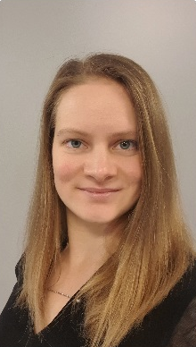

 Celoživotní studentka Vzdělávání mě baví. Ráda zkouším nové věci, rychle se učím a orientuji se v nových situacích.
Organizátorka Umím udržet pod kontrolou koordinaci úkolů na více úrovních. Díky individuálnímu přístupu k lidem jsem schopná dobře vycházet s kolegy a zároveň od nich získat potřebné výstupy v termínu.
Analýza a syntéza informací Dovedu spojovat a hodnotit získané informace a vyvozovat závěry.
| mateju.ludmila@gmail.com | +420 606 916 908 | www.linkedin.com/in/ludmila-mateju |
| Analytik ICT/Projektová manažerka, Státní ústav pro kontrolu léčiv |
Od 2020 | Podílela jsem se na přípravě konceptu elektronizace SÚKL. Řídím projekty na vývoj nových interních informačních systémů SÚKL. |
| Specialistka veřejných zakázek, Státní ústav pro kontrolu léčiv |
2018-2020 | Administrovala jsem i složité veřejné zakázky, kdy jsme vybírali dodavatele řadu měsíců. |
| Projektová manažerka, MB Pharma, s.r.o. |
2016-2018 | Koordinovala jsem výzkumné projekty v oboru biotechnologií s čerpáním dotací v hodnotě 150 mil. Kč. Podílela jsem se třeba na vývoji léčby bakteriálních infekcí bez antibiotik nebo na vývoji enzymu pro léčbu cukrovky. |